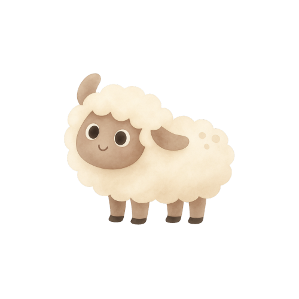

Reference
Reusable components
Every shared UI primitive under src/components/ that's used across more than one screen (screen-specific one-offs are documented on their own screen page instead). Shape language: soft 16–40px radii on structural cards, full pill on buttons/badges/chips, and a pink→gold gradient fill reserved for primary actions and active tab/toggle states — see Design tokens.
Button
Button.tsx — full pill radius, two variants. Primary uses the fixed pink→gold gradient with dark ink text and a soft warm glow shadow — the same gradient in both light and dark theme.
Card
Card.tsx — the base surface. Three variants; night always renders dark regardless of the active app theme; organic is the single asymmetric-radius hero/quote card allowed per screen.
Soft 24px-radius surface, no border, a barely-there ambient shadow — used almost everywhere.
One asymmetric corner radius, reserved for a single hero/quote element per screen (Today's Message on Home, the name field on Onboarding) — never reused elsewhere on the same screen.
Always-dusk fixed surface for bedtime/sleep content (Home's Bedtime Schedule panel, Journey's stats card) — same color in both app themes.
Checkbox
Checkbox.tsx — rounded-square, gold fill + checkmark when checked.
Toggle
Toggle.tsx — built from scratch (not RN's Switch) so web renders identically to native. "On" track is the pink→gold gradient; the knob carries a small soft shadow.
Yes/No pill
Used for goal-achieved answers on Check-In and Add Past Record. Two independent pill buttons (not a merged track); the selected one gets the gradient fill.
Tabs
Generic independent pill row — goal-category tabs, the Week/Month period toggle, and the Theme picker. Two active styles: the pink→gold gradient (default) and a flat solid-ink fill used only by Settings' Text Size control.
TimeField
TimeField.tsx — labeled time value, both tap-to-type and tap-icon-to-open the Time Picker panel.
Bedtime
11:00 PM 🕐
GoalListItem / EditableGoalListItem
GoalListItem.tsx — checkbox + label row for a selectable goal. EditableGoalListItem.tsx adds an inline pencil-edit affordance that renames the suggestion in place (Goal Picker rewrites the shared suggestion bank; Add Past Record edits a local-only copy).
Progress ring
A conic-gradient donut used for Journey's all-time success percentage — gold arc over a sunken track, numeral + caption centered inside.
Badge medallion
A circular gold-on-dusk medallion with a star and a ribbon label, used for the 7 fixed achievement badges on Journey. Unearned badges render as a dim, locked silhouette of the same shape.
First Step
Full Week
Dot-journey graph
A week of nights as dots along a dotted rail at varying heights: gold = fully achieved, blush = partially achieved, outline = no record. Used on Home's Journey preview.
Line chart
Bedtime/wake-time regularity series on the Bedtime screen — a colored line over a dashed target reference, one point per logged night in the period.
Bar chart
Sleep-duration series on the Bedtime screen — sage-green bars over a dashed target line, one bar per logged night.
Icons & illustrations
Bespoke hand-drawn-feeling flat SVGs — never photographic, never 3D. Mascot/weather illustrations plus a small set of line icons and the script wordmark, which ships as a static image asset rather than live Quicksand text.
 Wordmark (image asset)
Wordmark (image asset) MoonMascot ("Luna")
MoonMascot ("Luna")
CloudSheep
Settings gear (Home top bar)